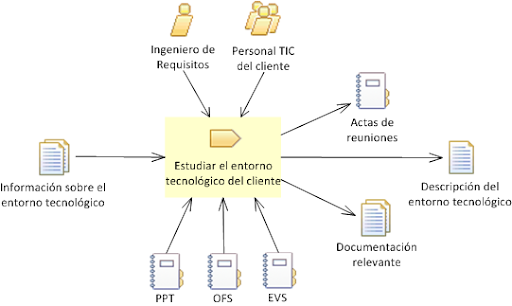
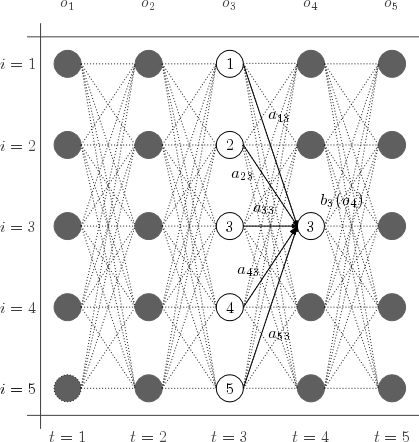

FACTORES QUE HAN INFLUIDO EN EL DESARROLLO DE LA INTELIGENCIA ARTIFICIAL
- Big data
- Entorno tecnológico
- Avance en algoritmo
Big data |
Entorno tecnológico |
Avance en algoritmo |
|---|---|---|
| Big Data es un término que describe el gran volumen de datos, tanto estructurados como no estructurados, que inundan los negocios cada día. Pero no es la cantidad de datos lo que es importante. Lo que importa con el Big Data es lo que las organizaciones hacen con los datos. Big Data se puede analizar para obtener ideas que conduzcan a mejores decisiones y movimientos de negocios estratégicos | Se refiere a la suma total del conocimiento que se tiene de las formas de hacer las cosas. Sin embargo su principal influencia es sobre la forma de hacer las cosas, cómo se diseñan, producen, distribuyen y venden los bienes y los servicios. | El algoritmo se utiliza para obtener la probabilidad P de cierta secuencia de observación derivada del modelo. |
|  |  |